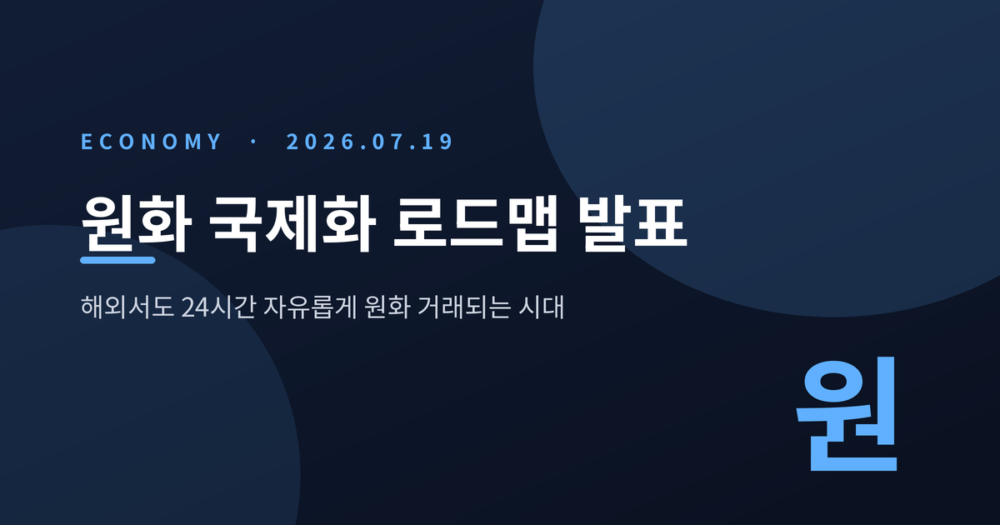
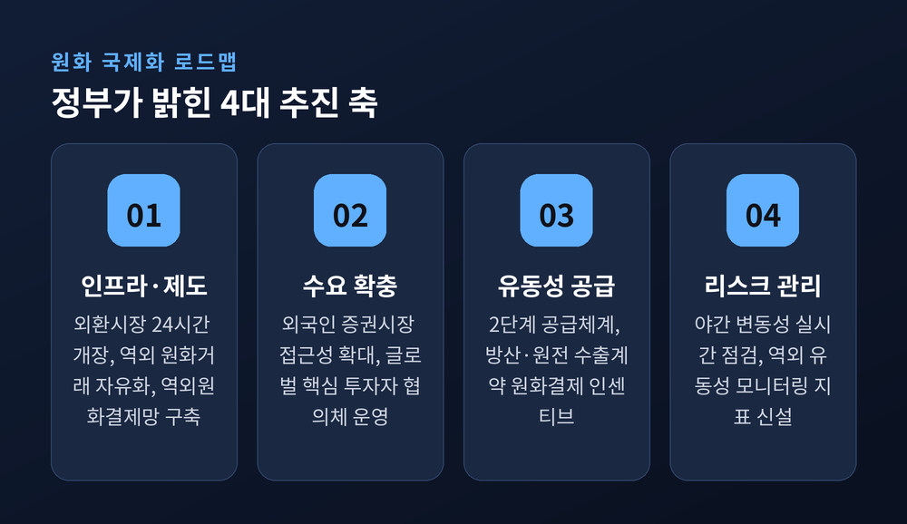
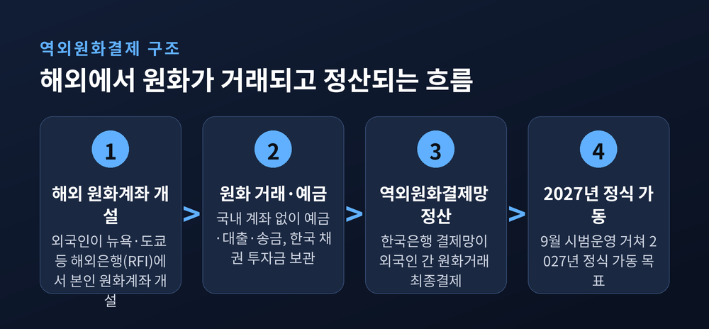
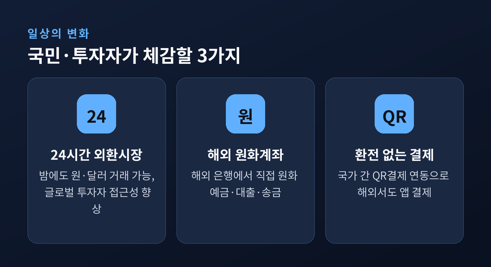
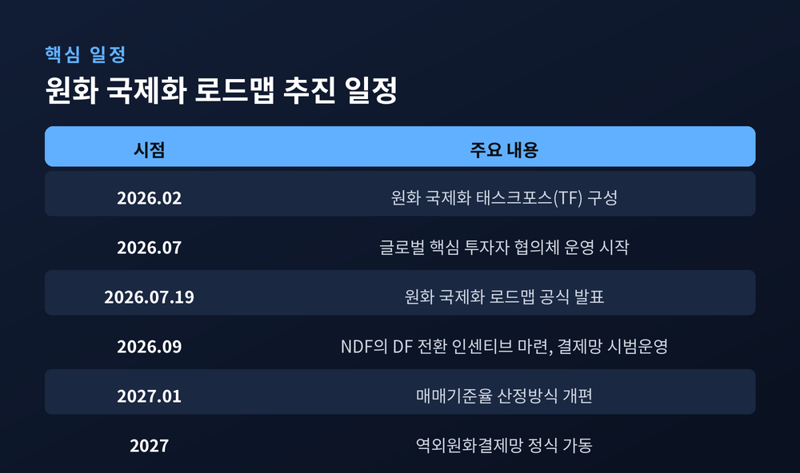
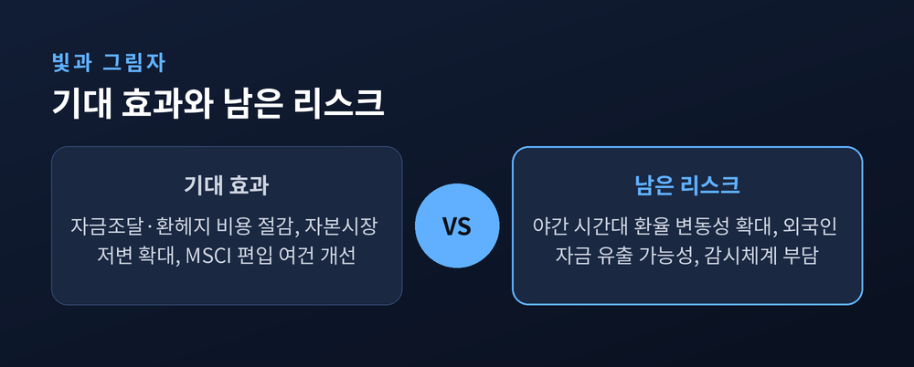

이번 글에서는 2026년 7월 19일 정부가 발표한 「원화 국제화 로드맵」을 정리해 보겠습니다.
1997년 외환위기 이후 30년 가까이 지켜온 외환정책의 틀을 바꾸는 발표입니다.
무엇이 달라지는지, 왜 지금인지, 그리고 어떤 숙제가 남는지를 차근차근 짚어 보겠습니다.
먼저 밝혀 둡니다. 이 글은 정책 내용을 이해하기 쉽게 풀어 쓴 해설이며, 특정 투자를 권유하는 글이 아닙니다.
재정경제부가 7월 19일 「원화 국제화 로드맵」을 발표했습니다.
금융위원회, 한국은행, 금융감독원, 한국예탁결제원이 함께 참여한 관계부처 합동 대책입니다.
핵심은 한 문장으로 압축됩니다.
원화를 '규제통화'에서 해외에서도 자유롭게 거래되는 '자유교환통화'로 바꾸겠다는 것입니다.
지금까지 원화는 나라 밖에서 자유롭게 쓰기 어려운 돈이었습니다.
외국인이 해외에서 원화를 조달하거나 결제에 쓰려면 사전신고 같은 문턱을 넘어야 했고, 그럴 수 있는 인프라 자체가 없었습니다.
정부는 이 문턱을 낮춰, 원화가 국제 무역과 자본거래에서 결제통화로 통용되도록 만들겠다고 밝혔습니다.
허장 재정경제부 제2차관은 7월 8일 회의에서 이렇게 말했습니다.
"원화 국제화는 1997년 외환위기 이후 유지해온 외환정책의 근간을 근본적으로 개혁할 것입니다."

로드맵은 네 갈래로 짜여 있습니다.
인프라와 제도를 손보고, 원화를 쓰려는 수요를 늘리고, 해외에 원화가 돌 수 있도록 유동성을 공급하고, 그 과정의 위험을 관리하는 순서입니다.
가장 눈에 띄는 변화는 외환시장이 24시간 열린다는 점입니다.
예전에는 정해진 시간에만 원·달러 거래가 가능했습니다.
앞으로는 뉴욕이 깨어 있는 밤에도, 런던이 움직이는 새벽에도 원화를 사고팔 수 있습니다.
외국인이 원화를 다루는 방식도 달라집니다.
지금까지는 국내에 계좌를 트지 않으면 원화를 자유롭게 굴리기 어려웠습니다.
앞으로는 정부에 등록한 '역외원화결제기관(RFI)'을 통해, 해외 은행에서 바로 원화 계좌를 열 수 있습니다.
예를 들어 뉴욕의 JP모건 지점이나 도쿄의 미쓰비시UFJ은행 지점에서 현지 투자자가 원화 계좌를 만들 수 있게 됩니다.
그 계좌로 한국 채권에 투자한 돈을 보관하고, 대출과 송금까지 할 수 있습니다.
한국에 오지 않고도 원화를 예금하고 빌리는 셈입니다.

이 거래들을 마지막에 정산하는 장치도 새로 만듭니다.
한국은행이 '역외원화결제망'을 구축해, 외국인끼리 주고받은 원화 거래를 최종 결제합니다.
9월 시범 운영을 거쳐 2027년 정식 가동을 목표로 합니다.
절차도 가벼워집니다.
역외원화결제기관을 이용한 외국인 간 원화 자본거래는 국내 부동산 거래를 빼면 사전신고가 면제되고, 은행의 확인 절차도 간소화됩니다.
여행자에게 와닿는 변화도 있습니다.
정부는 나라 간 QR결제 연동을 추진합니다.
성사되면 해외에 나가서도 달러로 환전하지 않고, 평소 쓰던 모바일 결제 앱으로 바로 계산할 수 있습니다.

정부는 여건이 무르익었다고 봅니다.
재경부 관계자는 "외환시장 구조개선과 세계국채지수(WGBI) 편입 등 자본시장 선진화가 진행되면서 원화 국제화의 여건도 성숙했다"고 설명했습니다.
준비는 올해 초부터였습니다.
재경부와 한국은행 등은 지난 2월 '원화 국제화 태스크포스(TF)'를 꾸려, 추진 방안과 리스크 대응책을 함께 다듬어 왔습니다.
뒤집어 보면, 지금까지의 원화가 그만큼 닫혀 있었다는 뜻이기도 합니다.
외국인이 역외에서 원화를 자유롭게 조달하고 결제할 인프라가 없었고, 거래에 앞서 일일이 신고를 해야 했습니다.
주요 통화에 견주면 원화의 국제적 통용성은 여전히 낮다는 것이 정부의 판단입니다.
이번 로드맵은 그 오래된 빗장을 순서대로 풀어 가겠다는 선언에 가깝습니다.
노림수는 뚜렷합니다.
원화가 국제사회에서 결제통화로 인정받으면, 기업은 자금을 조달하고 환전·환헤지를 하는 비용을 아낄 수 있습니다.
환율이 출렁일 때 실물경제가 받는 충격도 줄어듭니다.
원화로 수출 대금을 받을 수 있다면, 달러로 바꾸는 과정에서 생기던 손실과 수수료 부담을 상당 부분 덜어 낼 수 있습니다.
수요를 끌어올리는 장치도 있습니다.
정부는 해외 자산운용사와 투자은행이 참여하는 '글로벌 핵심 투자자 협의체'를 7월부터 운영합니다.
증권 거래·결제를 자동화해, 외국인이 국내 주식과 채권에 더 쉽게 들어오도록 길을 넓힙니다.
해외에서 원화 계좌를 열고 삼성전자나 SK하이닉스 주식을 사는 그림이 그려지는데, MSCI 선진국지수 편입의 걸림돌을 덜어 내는 효과도 기대됩니다.

유동성은 2단계로 공급합니다.
1단계에서는 외국환은행이 해외 금융기관에 원화를 대주고, 2단계에서는 한국은행이 추가 공급 여부를 검토하는 공공 안전판을 둡니다.
방산·원전처럼 해외 정부와 맺는 대형 계약을 원화로 결제하면 수출금융 인센티브를 주는 방안도 검토합니다.
좋은 그림만 있는 것은 아닙니다.
거래 시간이 늘어난 만큼, 감시의 눈도 밤새 켜 두어야 합니다.
시장에서는 야간 시간대 환율 변동성을 걱정합니다.
사람이 적은 시간대에는 작은 주문에도 가격이 크게 흔들릴 수 있기 때문입니다.
글로벌 금리 향방과 외국인 자금의 유출 가능성까지 겹치면, 불확실성은 더 커집니다.
정부도 이 대목을 의식합니다.
그래서 환율 변동성을 키우는 요인으로 지목돼 온 차액결제선물환(NDF) 거래를, 실제 원화가 오가는 실물인도거래(DF)로 유도하기로 했습니다.
외국환은행의 DF 거래에 인센티브를 주는 방안을 9월까지 마련합니다.
매매기준율을 정하는 방식도 2027년 1월부터 손봅니다.

외환당국은 대응 여력을 강조했습니다.
"환율이 펀더멘털에서 벗어나 쏠림이 심해지면, 즉시 필요한 시장안정조치를 단행할 준비가 돼 있다"는 입장입니다.
야간 시간대의 가격 급변동과 호가 스프레드, 거래량을 실시간으로 들여다보고, 역외 원화 유동성을 상시 점검하는 지표도 새로 만듭니다.
한계도 솔직히 짚어 둡니다.
원화가 하루아침에 달러나 엔처럼 널리 쓰이는 통화가 되는 것은 아닙니다.
로드맵의 상당 부분은 2027년 이후에야 제 모습을 갖춥니다.
방향을 정한 단계이지, 결과가 나온 단계는 아닙니다.
정리하면 이렇습니다.
이번 로드맵은 '닫혀 있던 원화의 문을 여는 설계도'입니다.
문을 열면 사람도 돈도 드나들기 편해지지만, 바람도 함께 들어옵니다.
편의와 변동성은 같은 문으로 들어옵니다.
그 문을 정부가 얼마나 침착하게 여닫느냐가, 앞으로 몇 년의 성패를 가를 것입니다.
다시 강조합니다. 이 글은 정책 해설이며 투자 권유가 아닙니다.
투자 판단과 그 결과의 책임은 투자자 본인에게 있습니다.